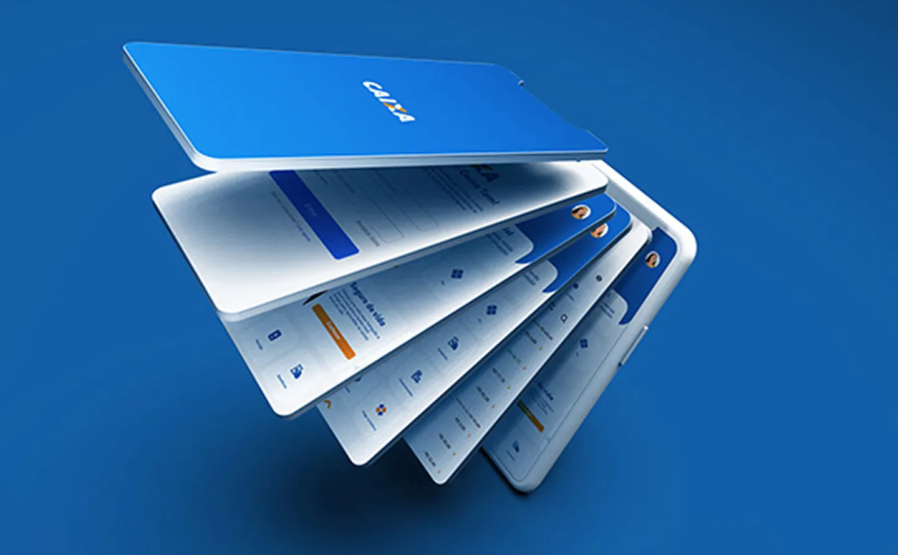
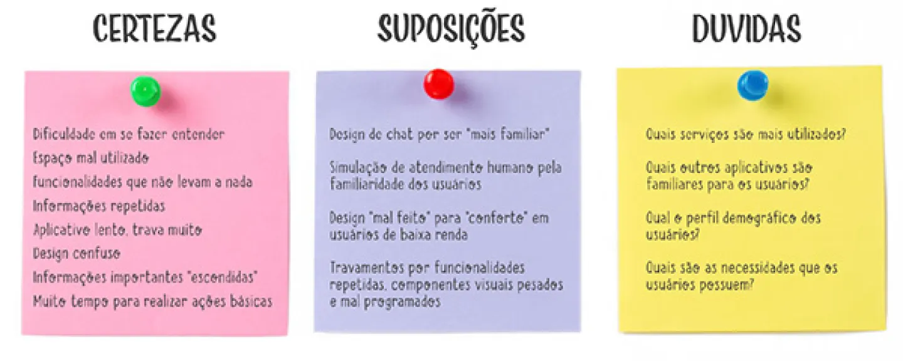
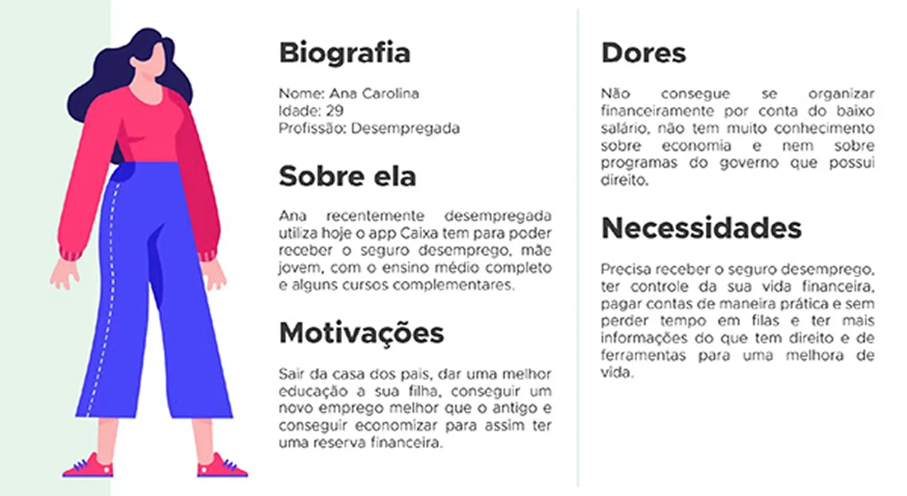
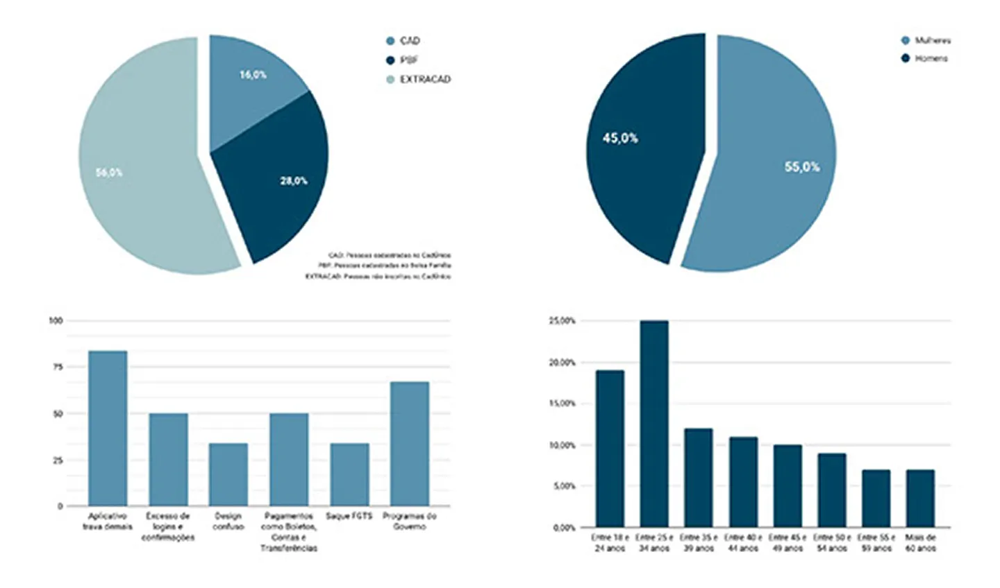
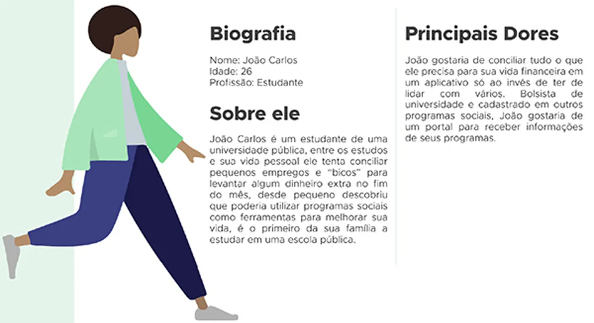
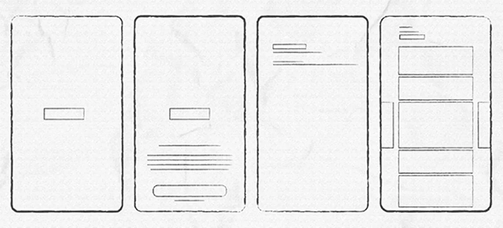
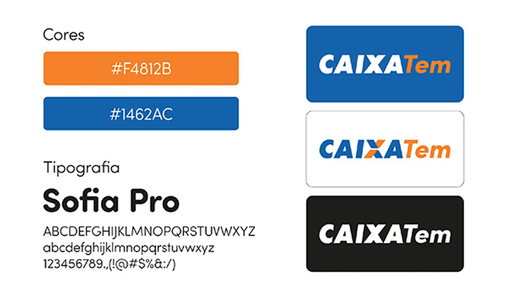
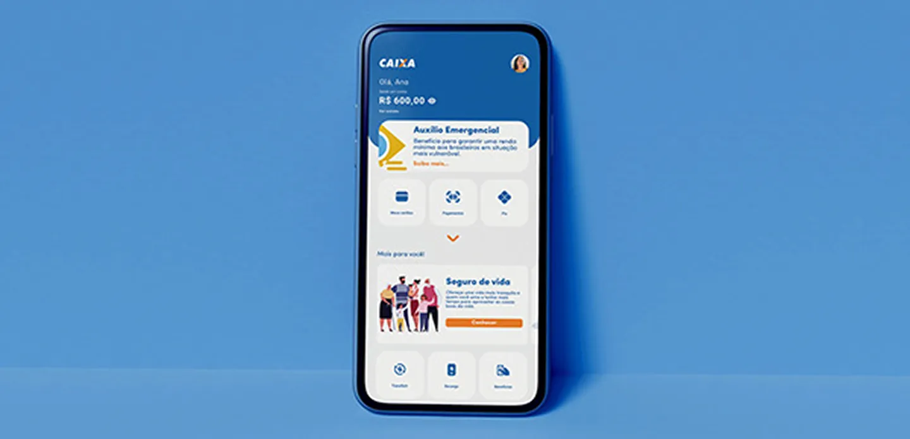
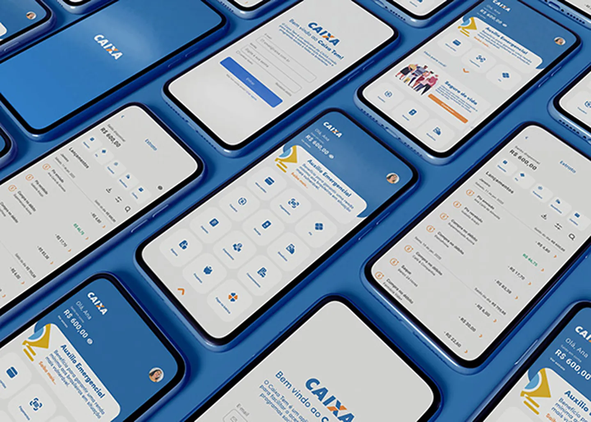
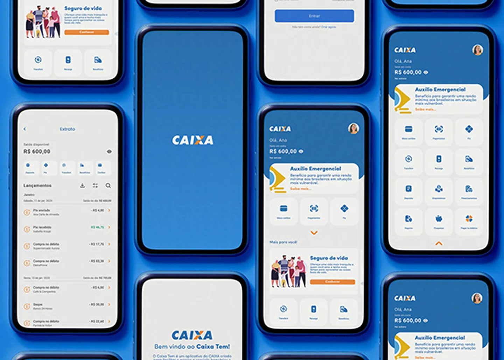

Estudo de caso
Caixa Tem
Melhorando a experiência de serviços e transações bancárias
do brasileiro através do redesign do aplicativo

Cenário Atual
Caixa Tem é um aplicativo de serviços sociais, bancários e transações financeiras, lançado em 2020 e disponível para Android e iOS.
Teve como base a disponibilização e distribuição do Auxílio Emergencial e o Saque Emergencial do FGTS. Hoje o Caixa Tem conta com várias funcionalidades comuns entre outros aplicativos e serviços bancários, como cartões digitais, poupança, saques, pagamentos, transferências, entre outros.
Desde o seu lançamento, os usuários do Caixa Tem vêm enfrentando vários problemas, como a enorme fila online no aplicativo, travamentos frequentes, funcionalidades complexas ou repetitivas, entre outras que trazem frustrações e dificultam a vida de quem o utiliza.
Com base nisso, trago a proposta de otimizar e encontrar melhores soluções para os serviços e transações bancárias oferecidos no Caixa Tem, utilizando o meu aprendizado e experiência.
Entendendo o Problema
O primeiro objetivo foi entender o funcionamento e as escolhas de usabilidade do aplicativo, levantar os serviços bancários e de gestão financeira já existentes no Caixa Tem e em outros bancos.
A partir disso, discutir o problema, levantar suposições e priorizá-las.
Pesquisa e Fundamentação
Para fazermos um redesign assertivo, o ideal é termos um maior embasamento tanto das necessidades e/ou limitações da empresa para o projeto quanto das necessidades e desejos dos usuários, já que são eles que utilizam os serviços no dia a dia.
Desk Research
Para iniciar o projeto foi feita uma Desk Research para reunir informações e mais conhecimento sobre o aplicativo Caixa Tem, os serviços oferecidos por ele, novas tendências, serviços bancários existentes no mercado e as necessidades dos usuários.
Atualmente o aplicativo conta com programas sociais, transações e serviços bancários básicos, como poupança, extrato, transferências, cartões, pagamentos, entre outros. Apesar de tentarem solucionar vários dos problemas apresentados pelo aplicativo, os usuários ainda continuam enfrentando diversas adversidades com o uso.

Matriz CSD
Após um levantamento básico sobre o aplicativo Caixa Tem, seus serviços, problemas mais comuns enfrentados pelos usuários e soluções já existentes no mercado, foi a hora de organizar essas informações para traçar um caminho mais claro para solucionar os problemas.
Utilizei a ferramenta Matriz CSD para me auxiliar e levantar as primeiras suposições e hipóteses do projeto, nessa etapa de descobertas. Entendendo melhor quais informações já havia coletado e quais precisaria coletar, eu passei para a próxima fase do projeto.
Protopersonas
Para a validação das informações e suposições levantadas até então, realizei pesquisas com usuários do aplicativo Caixa Tem e de alguns aplicativos de serviços bancários similares.
Escolhendo assim o formulário de perguntas e entrevistas de profundidade como método de validação de objetivos e hipóteses.
Os resultados da pesquisa trouxeram, com mais clareza, o cenário atual das pessoas que utilizam o aplicativo e quais são as suas maiores dificuldades e dores.

Pesquisa
Para a validação das informações e suposições levantadas até então, realizei pesquisas com usuários do aplicativo Caixa Tem e de alguns aplicativos de serviços bancários similares.
Os resultados da pesquisa trouxeram, com mais clareza, o cenário atual das pessoas que utilizam o aplicativo e quais são as suas maiores dificuldades e dores.

Aprendizado
O Caixa Tem é um dos aplicativos de serviços bancários mais utilizados pelos brasileiros, estando em segundo lugar nas listas de aplicativos de finanças mais pesquisados tanto pela Google Play quanto pela App Store, ultrapassando o dobro de downloads do Nubank, que é o aplicativo em primeira posição em ambas as listas.
Atualmente, com mais de 100 mil downloads, só no ano de lançamento atingiu cerca de 69 milhões de usuários que utilizaram a plataforma para receber o Auxílio Emergencial, entre outros programas sociais.
A grande maioria dos usuários tem entre 24 e 34 anos, sendo cerca de 55% composta por mulheres. Isso mostra que, apesar do perfil de baixa renda, esses usuários têm certa experiência e familiaridade com smartphones e com outros aplicativos de finanças, o que não justifica o excesso de cuidado em uma interface que pudesse ser mais familiar, como o WhatsApp.
Apesar do grande número de usuários que utilizam o aplicativo apenas para participar e receber programas sociais, boa parte acaba utilizando outras funções e serviços bancários, tornando-o uma forte ferramenta de organização financeira para o brasileiro. Resolvendo grande parte dos problemas levantados pela pesquisa, com sua base de usuários, o Caixa Tem poderia ser o aplicativo preferido e mais utilizado para serviços e transações bancárias em todo o país, sem levar em conta a utilização dos serviços sociais.
Persona
Com base nos aprendizados e dados das pesquisas, criamos uma persona para representar nosso usuário, suas características e facilitar o entendimento da sua jornada e das suas dores. Assim chegamos à seguinte persona:
Joana Almeida
Persona auxiliar: Joana Almeida tem 33 anos, é muito ativa e conectada. No início da pandemia baixou o aplicativo da Caixa Tem para poder receber o Auxílio Emergencial. Com a volta do trabalho presencial e as novas tecnologias, ela prefere pagar suas contas, contratar serviços e fazer compras pelo celular.
Principais dores: não tem conhecimento de programas, cursos e dicas que poderiam ajudar na sua vida financeira. Pela correria do trabalho, acaba não pensando em serviços de médio e longo prazo, como planos de saúde e seguro de vida.

Proposta de Solução
Baseado em toda a pesquisa e análise anterior, decidi criar uma solução para ajudar o usuário com as tarefas e serviços bancários mais básicos do dia a dia e priorizar as informações sobre os programas e serviços sociais disponíveis.

Wireframes
A criação dos wireframes contemplou os serviços e aspectos mais básicos e importantes do produto já existente. O processo envolveu entender como o produto já é e como ele pode melhorar sem descaracterizar os serviços existentes. O produto a ser criado precisava ser simples, objetivo e condizente com a realidade dos programas e serviços já ofertados pela Caixa.
Já com algumas ideias tomando forma, refinei o produto para que o fluxo contemplasse as necessidades definidas inicialmente e permitisse uma navegação fluida e de fácil compreensão, sem excesso de telas e informações redundantes.
Neste momento utilizei estudos de UX Writing para tornar a comunicação do app mais agradável e inclusiva. Também revisei o fluxo e otimizei a navegação, eliminando telas redundantes ou em excesso, contemplando assim a resolução das dores e da jornada do usuário.

Style Guide
Após várias interações e melhorias, foi o momento de começar a definir o Style Guide para a criação de um protótipo de alta fidelidade.
O guia de estilo utilizado foi próximo ao da Caixa, buscando uma uniformidade entre seus outros aplicativos e sua comunicação, tentando deixar o mais próximo possível.

Protótipo de alta fidelidade
Após todos os ajustes com base nos wireframes, no guia de estilos e nos ajustes de textos, foi construído o protótipo de alta fidelidade.

Conclusão
A prioridade do projeto foi desenvolver um aplicativo mais intuitivo, acessível e prático para os usuários, tendo em vista o cenário difícil em que o brasileiro se encontra e todos os problemas que o produto teve e tem até então.
Com base em todo o estudo de caso apresentado, creio que o produto desenvolvido ajudaria diretamente os usuários, facilitaria a organização financeira, as pequenas transações do dia a dia e a resolução de problemas de forma simplificada.
Aprendizado
Apesar do trabalho e das dificuldades, todo o desenvolvimento desse estudo de caso foi uma experiência muito enriquecedora e gratificante, conhecendo e compreendendo melhor as etapas e processos necessários para desenvolver um projeto com foco total no usuário. Hoje sinto que consigo enxergar e entender melhor o usuário e suas reais necessidades.
Podendo, assim, desenvolver um produto que faça uma real diferença tanto para a instituição quanto para quem precisa de praticidade e soluções para o seu dia a dia.
